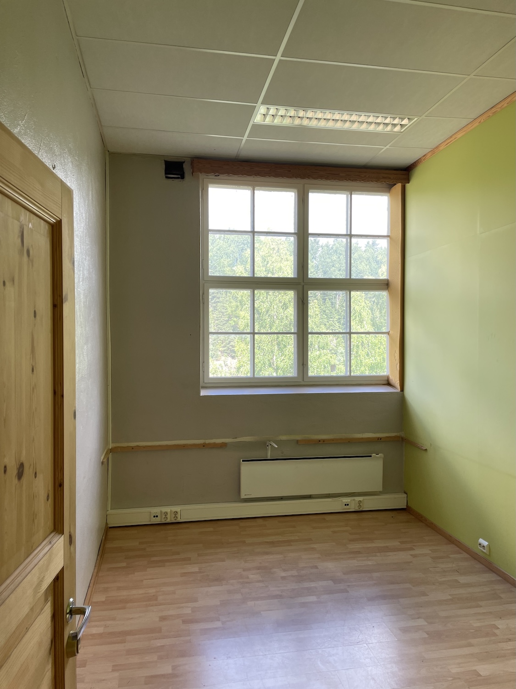
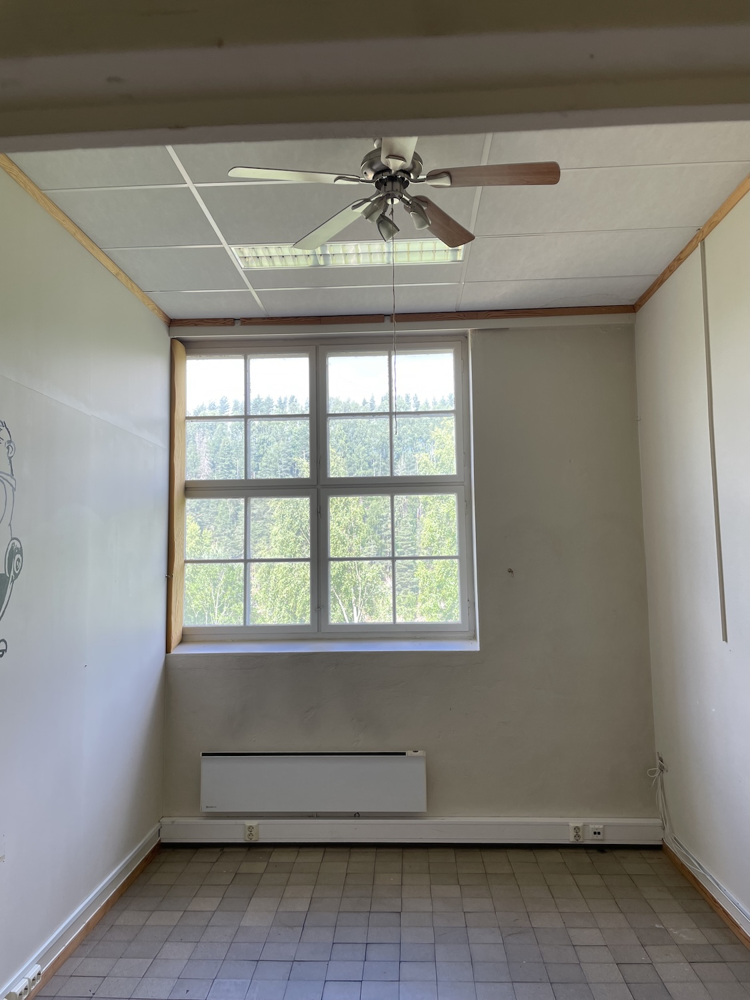
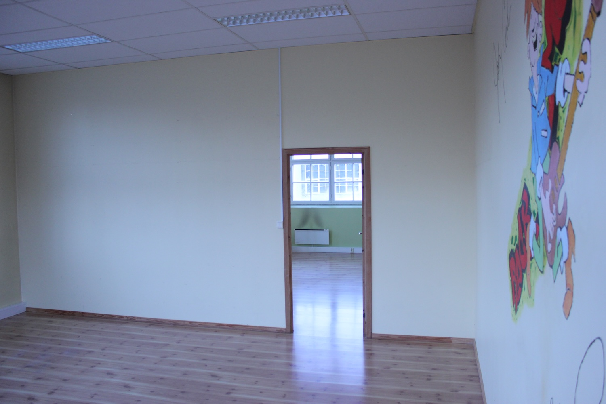
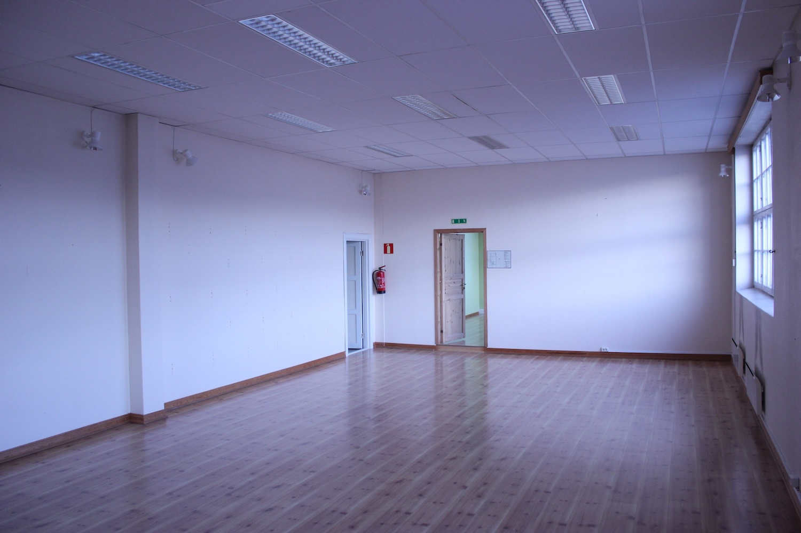

Katfoss Næringspark ligger sentralt til i Modum. Ca. 30 min. til Drammen eller Hønefoss. Få veibeskrivelse til våre lokaler her.
Kontakt
Kontakt går via Olav Ruud på telefon 900 22 993. Ikke nøl med å ta kontakt dersom du har spørsmål eller er interessert i å leie lokale. Vi holder til i Fabrikkveien 34, 3360 Geithus.
Våre lager
Nedenfor finner en liste med mer informasjon og bilder fra noen av lagerlokalene våre. Ta kontakt dersom du ønsker noe mer informasjon utover dette.
Klikk på boksene for å vise mer informasjon.
Lagerrom 1 - 14m2
Kontor/møterom/lager med laminatgulv og panelovn for oppvarming.
Lagerrom 2 - 14m2
Kontor/møterom/lager med fliser på gulv og panelovn for oppvarming.
Lagerrom 3 - 42m2
Lagerrom med laminatgulv og panelovn for oppvarming.
Lagerrom 4 - 72m2
Lagerrom med laminat på gulv og panelovn for oppvarming.
